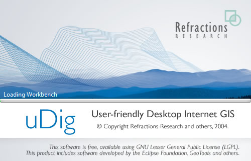
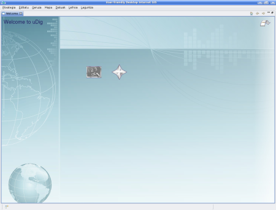
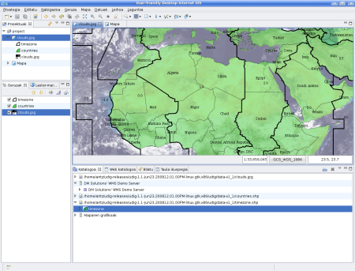

Sarreta Laburra
Hurrengo hau, laguntzaren barne dagoen uDig aplikaziorako sarrera azkar bat da.
Adibide datuak
Mesedez, hasi aurretik, har ezazu une bat, web orrian jarri ditugun adibide datu batzuk deskargatzeko.
- Hurrengo loturan eskuineko botoia sakatu eta aukera ezazu Gorde lotura bezala...:
data_v1_1.zip
- Fitxategiaren kokapenari buruz galdetzen duenean, aukeratu zure idaztegia kokapen egoki bezala.
- Fitxategiaren edukiera deskonprimatu (unzip) zure idaztegian duzun datu karpeta batean.
Nahiago baduzu, zure SIG datuekin froga dezakezu. Aurreko adibide datuak erabiliz, pausoz pausoko gida honekin segi ahal izando duzu.
uDig aplikazioa
- Aukeratu uDig 1.1 > uDig hasierako menuan.
- Aplikazioak minutu batzuk beharko ditu hasteko.

uDig aplikazioak, lan direktorioan konfigurazio karpeta bat du. Konfigurazio karpeta hori, aplikazioa lehen aldiz exekutatzean sortuko da. Arazoak badituzu, edota uDig Linux-ean edo Mac-ean exekutatzen ari bazara, mesedez erreferentzi orria begiratu uDig exekutatzen
Ongi etorri bista
- uDig lehen aldiz abiatzean, Ongi etorri bista pantaila osoan aurkeztuko da. Pantaila honek gidetera, dokumentaziora eta proiektuaren Web gunera loturak ditu.
- Klik egin ezazu Workbench bezala izendatutako gezian, goi eskuineko ertzean, eta uDig-en lan biltegiaren edukiera aurkeztuko du.

Edozein momentutan Ongi etorri bistara itzuli dezakezu, barra menuan Laguntza > Ongi etorri aukeratuz.
Workbench
Workbench leihoak era askotako editoreak eta laguntza bistak (egungo mapari buruz informazioa eskeintzen dutenak) eskeintzen ditu.

Goian, uDig-en sesio tipiko bat erakusten da Mapa Editorea , Proiektu bista , Geruza bista eta Katalogo bistarekin . Bista hauek aurrerago xehetasunez deskribatuko (azalduko) dira, bere erabilera erakusten dugunean.
Fitxategiak
Hasteko, aurretik deskargatu dituzun adibide datu batzuk kargatuko ditugu.
- Aukeratu Geruza > Gehitu menu barran Datuak Gehitzeko laguntza lehioa zabaltzeko.
- Aukeratu Fitxategiak datu jatorrien zerrendatik.
- Hurrengoa sakatu, fitxategi elkarrizketa zabaltzeko.
- Aukeratu zure datu karpetatik hurrengo fitxategia: countries.shp
- Ireki tekla sakatu
- Zure shapefile-aren edukieran oinarritutako Mapa Editore berri bat irekiko da. Izena ez egitez eta Maparen proiekzioa shapefiletik hartuak izango dira.
- Katalogo bista, countries.shp-entzat sarrera bat aurkezten eguneratu dela ikusi ahal izango duzu. Bista hau uDig-ek erabilitako baliabideen erabilera jarraitzeko erabiltzen da.
- Geruzak bistak hedatutako geruza bakarra aurkeztuko du mapa honetan. Bista hau, zure mapan informazioaren txanda eta itxura aldatzeko erabiltzen da.
- Proiektu bista, zure mapa proiektuak > countries tokian biltzen dela erakusteko eguneratuko da. Proiektu ugari batera zabalik izatea posible da, horietako bakoitzak mapa ugari izan ditzake.
- Ireki Windows-eko zure datuen karpeta
- Mapa editorean, clouds.jpg fitxategia narraztu, mapari geruza berri bat gehituko zaio.
- Marraztutako geruzen txanda, geruzen bistan ikusi ahal izando duzu. Orain clouds.jpg geruza, countries geruzaren goikaldean marrazten da.
- Aukeratu clouds.jpg geruza, Katologo biztan, eta zerrandako behe aldera eraman ezazu

Argibidea: maiz eginten den galderatako bat, erakunde batentzat uDig erabilgarri tresnatzat jotzen denean, zenbateko memoria finkoa erabiltzen duen da. Beste GIS aplikazio batzuen alde, uDig memori kantitate finko batekin exekutatu daiteke. Aurreko shapefilea ez da memorian kargatua, diskoan dauden datuak mantentzeko politica bat dugu eta beharrezkoa denean shapefile honen datuak pantailan marraztu.
Aholkua: uDig aplikazioan, shapefileak zuzenki narraztu eta askatu ere egin ditzakezu!
Mapa
Mapa Editorieak aurkezten duen muduko tokia kontrolatzea posible da, pantailako goikaldean aurkitzen den tresna barran dauden nabegazio tresnak erabiliz.
 Zoom tresna, gutxiegiz erabilgarri dago.
Zoom tresna, gutxiegiz erabilgarri dago.
- Zoom tresna erabili ezazu, saguaren eskuineko botoiaz errektangeluar gune bat marrazteko, ikusi nahi duzun munduaren azalera itxiz.
- Marrazkia urruntzeko, eskuineko botoiaz errektangeluar gune bat egin ezazu.
 Mapa panoramikoaren ikuspegia (Pan), eskala aldatu gabe, mapatik mugitzeko erabili daiteke.
Mapa panoramikoaren ikuspegia (Pan), eskala aldatu gabe, mapatik mugitzeko erabili daiteke.- Aldi berean erabili daitekeen nabegazio botoi ugari existitzen dira:
 Erakutsi datu guztiak, edozein momentutan azalera osoa berriz ikusteko erabil daiteke.
Erakutsi datu guztiak, edozein momentutan azalera osoa berriz ikusteko erabil daiteke. Haunditu eta
Haunditu eta  Txikitu (Zoom In eta Zoom Out) eskala kantitate finko batengatik aldatzeko erabil daitezke.
Txikitu (Zoom In eta Zoom Out) eskala kantitate finko batengatik aldatzeko erabil daitezke.
- Menu barran Nabigazioa > Atzera eta Nabigazioa > Aurrera erabil ditzakezu, aurrez ikusitako tokien bitartez ziklatzeko.
Aholkua: tresna askok, erdiko botoia sakatuta mantenduz Pan bat egitea eta desplazamendu gurpila erabiliz eskala kontrolatzea onartzen dute.
Web Mapen Zerbitzaria
uDig bezalako aplikazio bat erabiltzeko arrazoietako bat, Web orrian eskuragarri dagoen informazio geoespazialera heltzeko aukera da. Sekzio honek, zure mapetan sar dezakezun informazio geruzak dituzten Web Map Servers-en erabilera betetzen du.
- Aukeratu Fitxategia > Berria > Mapa berria menu barratik
- Catalog-ak Web bista aurkezteko, irtengunean klik bat eginez aldatu ezazu Web bistara.
- WMS:dm solutions loturan klik bat egin ezazu

- Baliabide aukeraketa orrian, hurrengo geruza hauek aukeratuko ditugu:
- Elevation / Bathymetry *
- Parks
- Cities

- Geruza hauek zure mapara gehitzeko, Amaitu sakatu

- Erabili Zoom tresna horietako pakete batera hurbiltzeko
- Informazio gehiago lortzeko, aldatu
 aukerara eta klik egin pakete batean
aukerara eta klik egin pakete batean
Aholkua: Teklatuan Z eta I sakatuz, Zoom eta Informazio tresnen artean alda dezakezu.
Estiloa
- Aukeratu proiektuak > countries, klik bikoitza egin dezakezu Mapa hau irekitzeko, edo ta eskuineko botoiaz klik bakarra eta Open Map aukeratuz.
- Geruzen bistan, aukeratu countries geruza.
- Estilo editorea ireki, eskuineko botoiaz countries geruzan klik eginez eta Altatu Estiloa aukeratuz.
- 1.Lurraldeen aurkezpenean aldaketa batzuk burutuko ditugu
- Lerroa: Kolerean klik egin eta aldatu kolere BELTZera
- Bete: egiaztapen laukitxoko gurutzea kenduko dugu, betea desaktibatzeko
- Etiketa: laukitxoa baieztatu eta atributuen listan CNTRY_NAME aukera ezazu

- Aplikatu sakatu, zure Mapa nola aurkezten den ikusteko, Geruzen bista, egungo estiloa erakusteko eguneratuko da.
- Emaitzarekin adoz zaudenean, Onartu sakatu ahal izango duzu irtetzekov.
- Fitxategi batzuk estiloak barneratzen dituzte, aukeratu Geruza > Gehitu... menu barran
- Aukeratu Fitxategia datuen iturri zerrendatik eta Hurrengoa sakatu
- lkarrizketa erabiliz, timezone.shp fitxategia aukeratu eta Zabaldu sakatu
- Zaila izan daiteke xehetasun gehiagorako zer gertazen den clouds.jpg geruzarekin ikustea. Aukeratu Mapa > Mylar, menu barran, aukeratutako geruza fokatzeko.
- Geruzen bista erabiliz, aukera itzazu timezone, countries eta clouds.jpg txandaka, efektua ikusteko

- 1.Efektu hau edozein unetan ezeztatu dezakezu, menu barratik Mapa > Mylar erabiliz.
Zer da hurrengoa?
Hau soilik lehen pasua da uDig ikasketaren bidean. Material ugari dago (eta gaitasun gehiago) gure pausoz pausoko gidetan (walkthroughs) aukitu ahal izango dituzunak.
- Walkthrough 1 - PostGIS-en erabilera froga ahal izando duzu, Web Feature Server batetik datuak ateratzeko eta Gaien erabilera esportatu gure kolorezko Brewer teknologia indartsuarekin.
- Walkthrough 2 - Hemengo honetan, shapefiletako datuen ezaugarri desberdinen edizio eta manipulazio tresnak sortzeko eta erabilitzeko aukera desberdinak aurkezten dira, horrez gain GeoServer-en instalazioa eta edizioa Web Feature baten bitartez.
(c) Copyright (c) 2004-2008 Refractions Research Inc. and others.